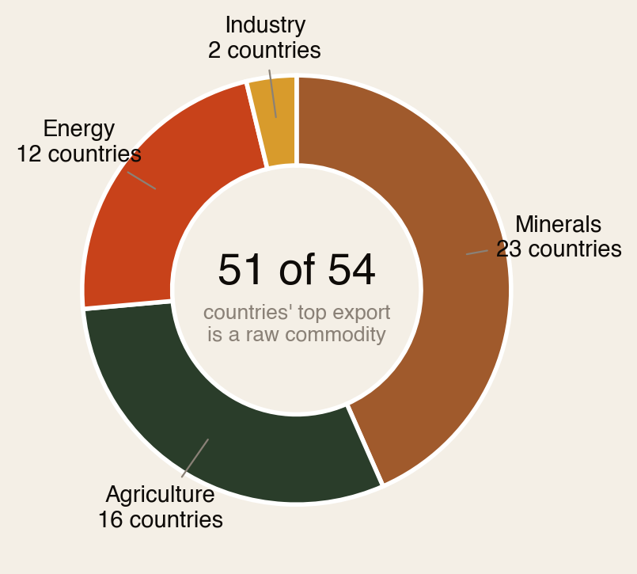
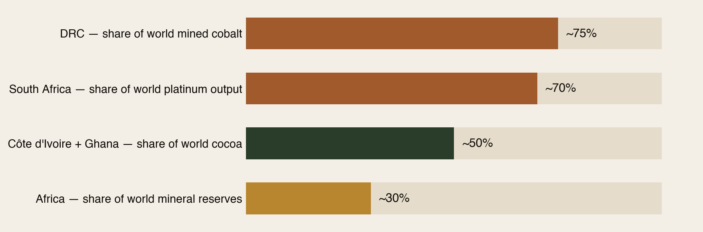
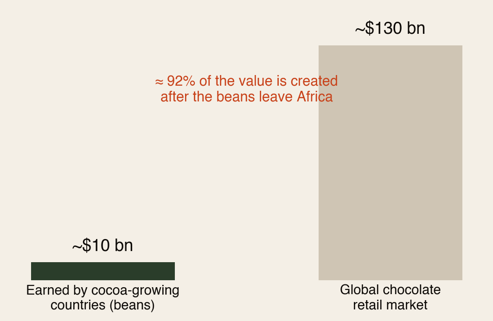
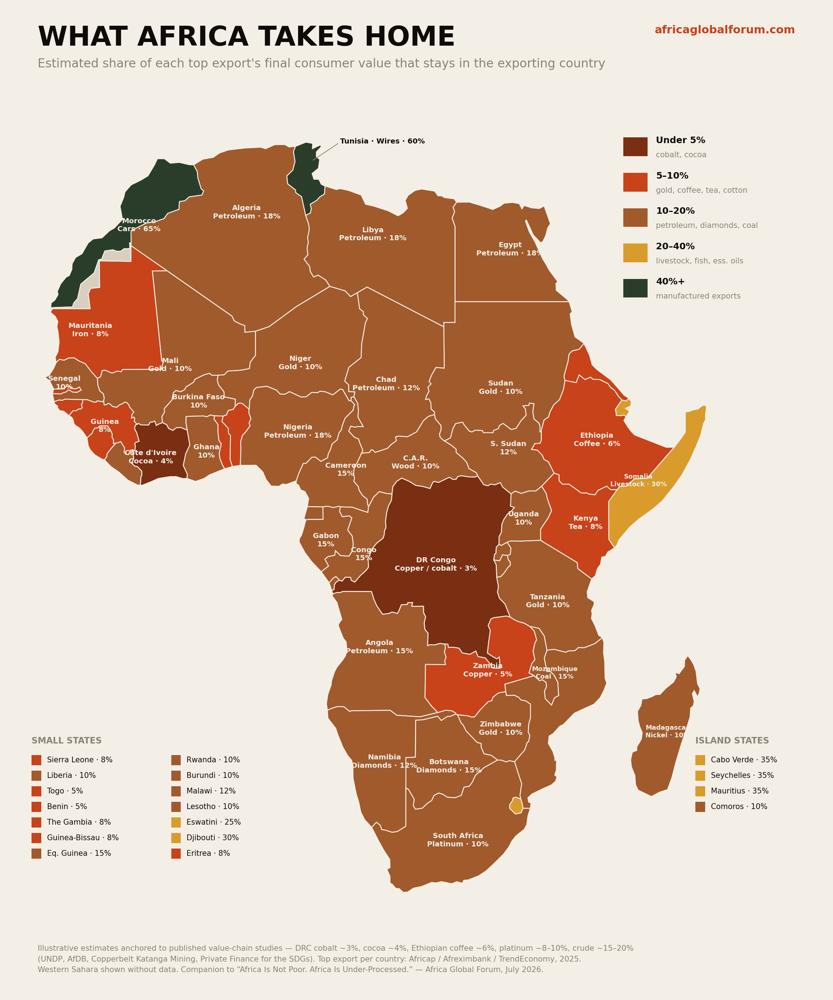
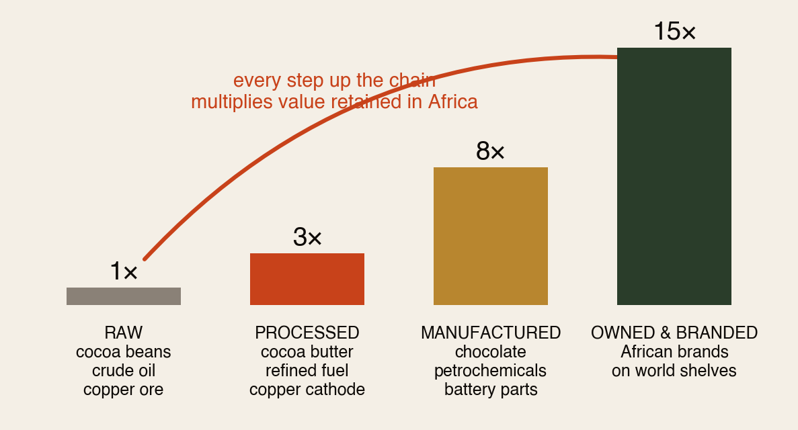
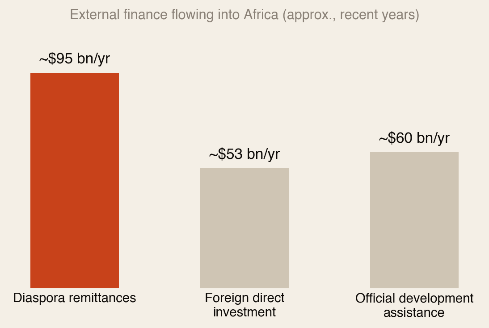

Africa is not poor. Africa is under-processed.
51 of Africa’s 54 countries export a raw commodity as their top export — and 80–90% of the final consumer value is created after it leaves the continent. What the export map really shows, where the value-addition opportunity sits, and why the diaspora is the missing bridge.
Section 01Executive Summary
A single map of Africa’s top exports tells two stories at once. The first is a story of abundance: nearly every country on the continent is a top-tier supplier of something the global economy cannot function without — cobalt, copper, cocoa, coffee, gold, oil, platinum, diamonds. The second is a story of leakage: almost all of it leaves the continent raw, which means the profit, the jobs, the technology and the industrial capability are built somewhere else.
Africa’s poverty is not a resource problem. It is a position-in-the-value-chain problem.
- ~30% of the world’s known mineral reserves are in Africa.
- ~75% of the world’s mined cobalt comes from the DRC alone.
- ~50% of the world’s cocoa comes from Côte d’Ivoire and Ghana together.
- The AfCFTA stitches these markets into a single trading zone of ~1.5 billion people and roughly $3.4 trillion in combined GDP.
The old story was extraction. The new story — industrialization, regional trade, local ownership of value chains — is the largest untapped income stream on the continent. And the roughly 160–200 million people of African descent living abroad are not spectators to it: they are its financing arm, its skills pipeline, its first export market, and its narrator.
Section 02What the Map Shows: A Continent of Raw Inputs

Of the 54 countries on the export map, 51 have a raw commodity as their top export. Only two — Morocco (cars) and Tunisia (electrical wiring) — lead with manufactured goods.
- Energy exporters (Nigeria, Angola, Algeria, Libya, Egypt, Gabon, Congo, Chad, South Sudan and others) fuel the world — while most import their own refined fuel.
- The mineral belt — DRC and Zambia’s copper and cobalt, the gold economies of West and East Africa, South Africa’s platinum, the diamond producers of the south — supplies the raw inputs of the energy transition and global finance.
- The agricultural exporters — Côte d’Ivoire’s cocoa, Ethiopia’s coffee, Kenya’s tea, the cotton belt — grow what the world drinks, eats and wears, then buy it back branded.
- Morocco and Tunisia are the exception that proves the rule: industrialization is possible, and it changes everything.
Section 03Africa’s Grip on Global Supply
This is not a marginal supplier asking for inclusion. On several inputs the modern economy simply does not work without Africa:

Add the AfCFTA — the largest free-trade area by country count since the WTO’s founding — and the pieces exist for continental-scale manufacturing: a factory in Accra or Kigali can, in principle, serve the whole continent without fifty tariff walls.
That is not a charity story. That is a power story.
Section 04The Value-Addition Gap: Where the Money Actually Goes
The economics of raw export are brutal and consistent across commodities. Cocoa is the clearest example: West Africa grows most of the world’s cocoa, but the bean earns cents while the bar earns dollars — and the bar is made in Europe.

- Coffee: Ethiopia, the birthplace of coffee, earns a sliver of the retail price of a cup of its own coffee sold in London or New York.
- Cobalt: the DRC exports ore and concentrate while the battery precursor plants and EV margins sit largely in Asia.
- Crude: Nigeria exported crude for decades while paying others the refining margin on its own resource — the scale of the Dangote refinery shows what reversing that takes.
Flip the famous “top exports” map around and colour each country by the share of its top export’s final value that actually stays home, and the story becomes unmissable — a continent of single-digit reds and browns, with the industrialized north-west corner in green:

Section 05The Ladder Africa Is Climbing

Copper becomes batteries. Cocoa becomes chocolate. Coffee becomes branded products. Crude becomes refined fuel. Cotton becomes textiles. The next wave of African wealth sits not in what Africa exports, but in what Africa owns before it exports it.
Section 06Why This Matters to Africans Living Abroad
This is the heart of the report: the value-addition story cannot be written without the diaspora. Six reasons.
1 · The diaspora is already Africa’s largest financier

Remittances of roughly $90–100 billion a year make the diaspora not a potential investor in Africa but its most reliable source of external capital already. The strategic question is whether that capital flows only into consumption — school fees, rent, family support, all vital — or whether a growing share moves into productive assets: processing plants, agribusinesses, logistics firms, brands.
The shift from remittance to investment is the diaspora’s version of the shift from raw export to finished product. Same story, personal scale.
2 · The diaspora holds the skills the value chain needs
Moving from exporting cocoa to exporting chocolate requires food scientists, packaging engineers, brand managers, supply-chain specialists and trade lawyers. Africans abroad work right now inside the very companies that capture African value — in manufacturing, finance, tech, pharma and logistics across Europe, North America, the Gulf and Asia. Every one of those professionals is a walking transfer of exactly the know-how the continent’s industrialization requires.
3 · The diaspora IS the market access
The hardest part of selling a finished African product abroad is not making it — it is distribution, trust and shelf space. The diaspora is a built-in first market of tens of millions of consumers, plus a sales force embedded in every major city on earth. Buying African-owned brands abroad is value addition by another name.
4 · The diaspora shapes the narrative — and narrative shapes capital
Investment follows perception. As long as the dominant global story about Africa is charity, the capital that arrives will be charity-shaped: small, conditional, extractive. When the story becomes “the supplier of the world’s critical inputs is moving up the value chain,” the capital becomes investment-shaped. Africans abroad sit inside the newsrooms, banks, universities and boardrooms where that perception is formed. Telling the power story is not PR; it is an economic act.
5 · The diaspora can broker the partnerships
Morocco’s car industry was built on structured partnerships with global automakers. The next wave — battery precursors on the DRC–Zambia copperbelt, cocoa processing in Abidjan and Tema, textile mills along the cotton belt — needs brokers who understand both sides: how a German, American or Korean firm thinks, and how business actually gets done in Lagos or Lusaka. That commercial and cultural bilingualism is the diaspora’s native skill.
6 · Networks compound what individuals scatter
Individual effort scatters; organized networks compound. Turning dispersed diaspora capacity into coordinated economic force is precisely the function of communities like the Africa Global Forum.
Section 07What a Diaspora Member Can Do — Starting This Year
- Redirect a slice of capital. Even 10% of annual remittances shifted toward diaspora bonds, investment clubs, or equity in African processing and manufacturing ventures changes the math at scale.
- Adopt one value chain. Pick the sector you work in abroad and map it onto your home country’s raw export. That intersection is your highest-leverage contribution.
- Buy and stock African-owned finished brands — and get them into the stores, offices and events where you live.
- Transfer skills deliberately. Mentor, advise remotely, teach, sit on boards, or take a secondment. Knowledge is the one export that multiplies rather than depletes.
- Tell the power story in your workplace, network and platforms. Correct the charity framing when you encounter it.
- Organize. Join and build diaspora networks that pool capital, deals and expertise rather than acting alone.
Section 08Who Moves First?
- Morocco & Tunisia — already industrialized exporters; the task is deepening and spreading the model.
- Côte d’Ivoire & Ghana — cocoa grinding capacity is already growing; branded chocolate for AfCFTA and diaspora markets is the nearest-term win.
- Ethiopia & Kenya — strong origin brands in coffee and tea; the leap to roasted, packaged, branded is short and high-margin.
- DRC–Zambia corridor — the biggest prize (battery precursors) but the heaviest infrastructure need; regional cooperation is the unlock.
- Nigeria — Dangote-scale refining, the continent’s largest domestic market, and its most globally distributed diaspora.
The realistic pattern: agriculture-based value addition moves first (lower capital intensity, existing skills); minerals processing follows (capital-heavy, infrastructure-dependent) — with the AfCFTA as the demand engine and the diaspora as the capital, skills and market bridge throughout.
Section 09The Country Deep-Dive (Part II of the PDF)
The full PDF edition carries a second part: a fully referenced, country-by-country analysis of who is best positioned to move from raw exports to finished products first — Morocco’s automotive blueprint, the DRC–Zambia battery-materials hub signed in March 2025, Côte d’Ivoire’s $233M cocoa processing plant and raw-bean export ban, Nigeria’s Dangote refining revolution, South Africa’s platinum-to-fuel-cell pivot, and Ethiopia’s coffee and textiles play — plus sector value multipliers, the structural headwinds, and 36 cited sources.
↓ Download the full 19-page combined PDF
The continent’s move up the value chain and the diaspora’s move from remitter to owner are the same move — made from two sides of the ocean.
Sources: Africap “The Top Exports of African Countries” (2025) drawing on Afreximbank and TrendEconomy data; World Bank remittance data; UNCTAD; OECD; AfDB Africa Industrialisation Index 2025; AfCFTA Secretariat. Figures are approximate and labelled as such throughout.
The diaspora helps the diaspora.
Africa Global Forum is a peer network for Africans abroad — help each other, sit together, and bounce ideas. The research above is part of an open library. The Forum itself is by application.